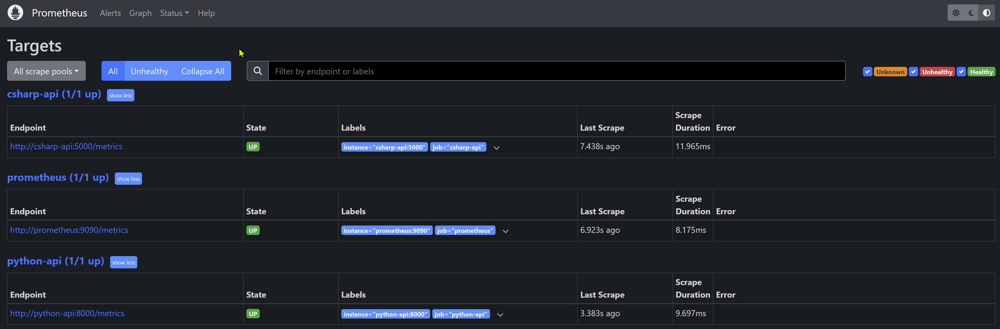
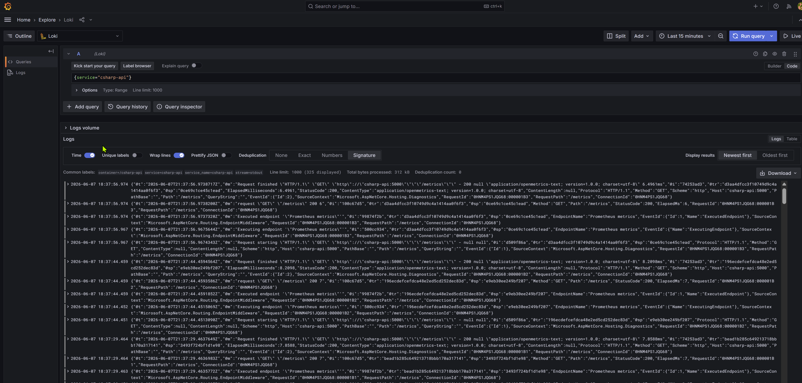
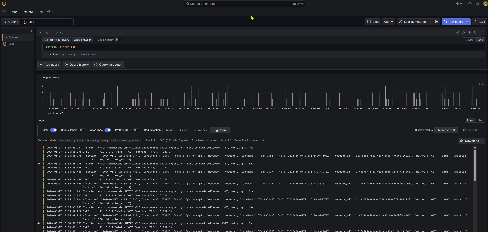
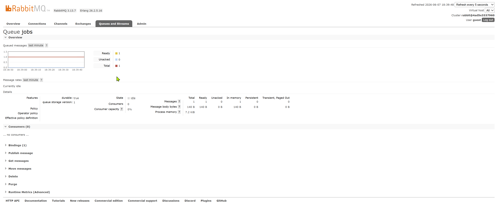
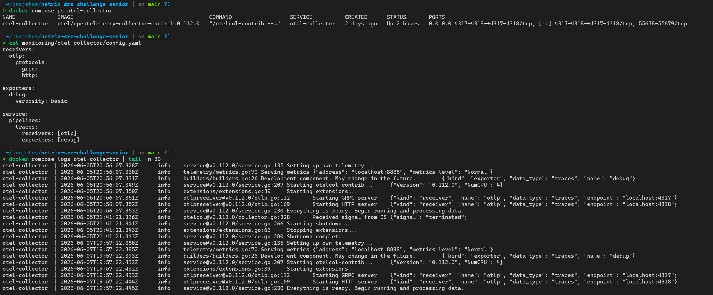

Da degradação de latência à observabilidade orientada por SLO
Case study de SRE: uma API que saiu de ~200ms para 5s em produção numa sexta 18h. Resposta a incidente, postmortem blameless, definição de SLIs/SLOs, estratégia de observabilidade com OpenTelemetry e análise de custo (FinOps), do diagnóstico à prevenção.
O cenário
Sexta-feira, 18h. Pico de tráfego, time reduzido, deploy recente: o momento clássico em que um incidente nasce.
A latência da API subiu de ~200ms para 5s. O Sentry começou a registrar timeouts em volume e clientes já reclamavam. O staging seguia normal, e havia um deploy às 17h30. O ambiente roda em Kubernetes (AKS) com C# e Python, instrumentado com Prometheus, Grafana e Loki; tracing distribuído ainda não estava pronto.
A pergunta de SRE não é "qual a causa raiz definitiva?", e sim: como reduzir impacto, organizar comunicação e preservar evidência. Primeiro restaurar, depois investigar.
O impacto, em números
Antes → depois do deploy. O serviço respondia health check enquanto a experiência real degradava.
Timeline do incidente
Correlação temporal forte com o deploy das 17h30: pista para reduzir o espaço de investigação.
account_idCritério de rollback foi objetivo, não intuitivo: P95/P99 acima do SLO por duas janelas consecutivas, aumento de 5xx pós-deploy, clientes confirmando impacto, sem mitigação simples em 15 min, ou correlação temporal forte com o deploy.
Causa raiz: N+1 + índice ausente
Para cada item processado, a aplicação disparava uma consulta adicional contra users. O log de slow queries mostrou o padrão:
-- repetida 1× por item, 2.500ms–5.100ms cada SELECT * FROM users u WHERE u.account_id = $1; -- sem índice em account_id → full scan sob carga real
account_id não resolve o N+1 sozinho. N+1 é problema de quantidade de consultas; o índice reduz o custo de cada consulta. A correção definitiva remove o padrão (batch, join ou eager loading); o índice entra como melhoria complementar.
Por que passou no staging? O ambiente não reproduzia volume, cardinalidade e concorrência de produção. A query parecia aceitável em baixa escala e degradou sob dados reais. Teste funcional passa, comportamento operacional falha.
SLIs, SLOs e error budget
Dois pilotos cobrem os dois tipos de experiência: resposta síncrona (API C#) e conclusão de trabalho assíncrono (Core Processor em Python).
| SLI | Como medir | SLO inicial |
|---|---|---|
| Disponibilidade HTTP | Requests não-5xx / total | 99,5% /mês |
| Latência P95 | Duração das requisições | < 500ms (janela 5m) |
| Taxa de erro 5xx | 5xx / total de requests | < 1% /mês |
Backlog da fila jobs | Mensagens prontas na fila | < 1.000 por >10min |
| Idade da mensagem | Espera da msg mais antiga | P95 < 5min |
| Taxa de ACK | Processadas com ACK / consumidas | 99% /mês |
Error budget = 0,5% de 720h
Um SLO de 99,5%/mês tolera ~3h36min de erro ou indisponibilidade. Não é permissão para falhar. É o limite que dispara decisão: se o consumo acelera, reduz-se risco de mudança (congelamento de deploys não críticos, rollback mais agressivo, priorização de confiabilidade).
Alertas multi-window, multi-burn-rate combinam janelas curtas e longas para o mesmo SLO, evitando tanto o alarme por pico isolado quanto a cegueira para degradação lenta:
| Severidade | Janelas | Sinal | Ação |
|---|---|---|---|
| Alta | 5m + 1h | Consumo acelerado do budget | Acionar on-call |
| Média | 30m + 6h | Degradação sustentada | Investigar em horário comercial |
| Baixa | 24h | Tendência acima do esperado | Revisar capacidade / regressões |
SLI de disponibilidade em PromQL (roda na stack via prometheus-net):
sum(rate(http_requests_received_total{job="csharp-api", code!~"5.."}[5m])) / sum(rate(http_requests_received_total{job="csharp-api"}[5m]))
Estratégia de observabilidade
Maturar a base existente antes de adicionar ferramentas. Melhorar a qualidade do sinal antes da quantidade de dashboards.
O que manter
- Prometheus para métricas operacionais e SLIs
- Grafana como ponto central de visualização
- Loki para logs estruturados (já via Promtail)
- OpenTelemetry como padrão de instrumentação
O que melhorar
- Padronizar labels e correlação request_id ↔ logs ↔ traces
- Dashboards por serviço (4 sinais de ouro)
- Alertas por burn rate, não por métrica técnica isolada
- Controlar cardinalidade (cuidado com label
path)
debug, sem backend de traces nem datasource no Grafana. Existe base de instrumentação, falta capacidade de investigação ponta a ponta. Evolução em fases, começando por endpoints críticos e com sampling desde o início.
APM & tracing: a decisão
OpenTelemetry como camada neutra reduz lock-in e permite trocar o backend sem reinstrumentar C# e Python.
| Opção | Pontos fortes | Riscos / limitações |
|---|---|---|
| Datadog | Experiência operacional pronta, ótima correlação | Custo cresce rápido (hosts, ingestão, APM); exige governança |
| New Relic | Boa cobertura de APM e dashboards | Modelo de custo por usuário/ingestão; menos controle sem OTel |
| Dynatrace | Forte em enterprise, automação de dependências | Pesado e caro para um estágio inicial |
| OSS: Tempo/Jaeger + OTel | Menor lock-in, encaixe com Grafana existente | Mais responsabilidade operacional (storage, retenção, escala) |
Análise de custo (FinOps)
Self-hosted no AKS. Premissas: ~50 req/s em pico, ~10 GB de logs/dia, ~50k séries ativas, sampling de traces 100% em erros e ~10% no tráfego normal.
| Item | Atual (US$/mês) | Proposto (US$/mês) |
|---|---|---|
| Compute do stack de monitoramento | 150 | 180 |
| Storage de métricas (Prometheus TSDB) | 20 | 25 |
| Storage de logs (Loki + object storage) | 30 | 30 |
| Backend de tracing (Tempo + storage) | 0 | 90 |
| Rede egress e backup | 15 | 20 |
| TOTAL estimado | US$ 215 | US$ 345 |
Alavancas de redução sem perder visibilidade:
| Alavanca | Impacto | Como controlar |
|---|---|---|
| Retenção por criticidade | Menos storage de logs | Definir quais eventos exigem retenção estendida |
| Sampling de traces | Menos ingestão | 100% em erros/lentidão; amostrar tráfego normal por serviço |
| Controle de cardinalidade | Menos séries de métricas | Detalhe fino em logs/traces; métricas para agregados |
| Filtro de logs ruidosos | Menos ingestão e ruído | Validar filtros em piloto antes de produção |
| Alertas por SLO | Menos toil e fadiga | Burn rate aciona on-call; métrica técnica vira contexto |
Evidências da validação local
A stack foi provisionada e validada localmente antes de qualquer recomendação. Clique para ampliar.




jobs operacional
debug (sem backend de traces)Decisões arquiteturais (ADRs)
Decisões registradas com contexto, opções e consequências.
Alertas baseados em SLO e burn rate
Diferenciar sintoma com impacto real de sinal de diagnóstico. Métricas técnicas viram contexto em dashboard, não página.
AcceptedOpenTelemetry como padrão para APM e tracing
Camada neutra para trocar o backend sem reinstrumentar. Cuidado com sampling, atributos obrigatórios e governança de custo.
AcceptedRetenção de logs e controle de cardinalidade
Retenção curta para logs brutos; estendida só para eventos críticos. Controlar labels de alta cardinalidade no Loki.
AcceptedPrevenção de recorrência
A falha não foi de uma pessoa, e sim de lacunas no sistema de entrega. Tratar performance e observabilidade como parte do contrato de produção, não como validação posterior ao deploy.
Detecção mais cedo
Alertas baseados em SLO e burn rate para latência e erro da API.
Prevenção na entrega
Gate de performance na pipeline e revisão explícita de queries (risco de N+1) no checklist de PR.
Diagnóstico mais rápido
Tracing funcional com OpenTelemetry, correlacionando endpoint, chamada de banco e tempo por dependência.
Deploy mais seguro
Rollout progressivo (canary/blue-green) e feature flags para desligar comportamento novo sem rollback completo.
Staging representativo
Revisar massa de dados para refletir volume e cardinalidade reais.
Apresentação do case
Os mesmos pontos em formato de slides. Abrir em tela cheia